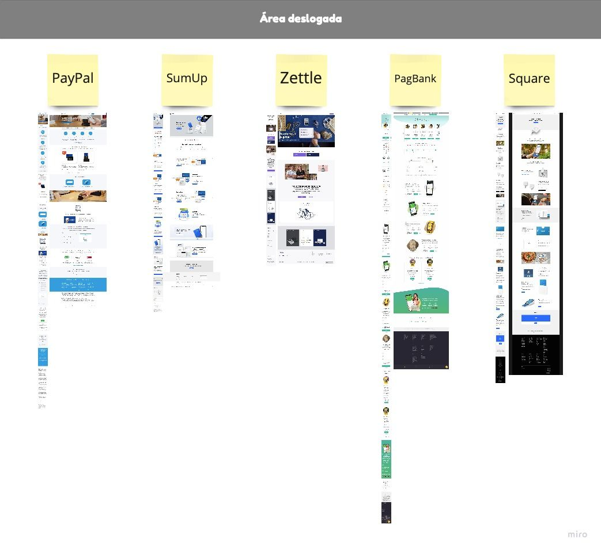
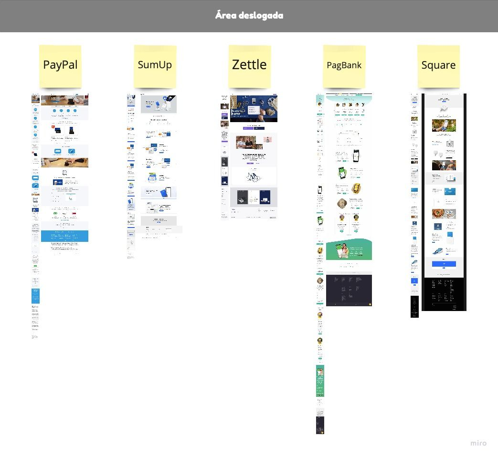
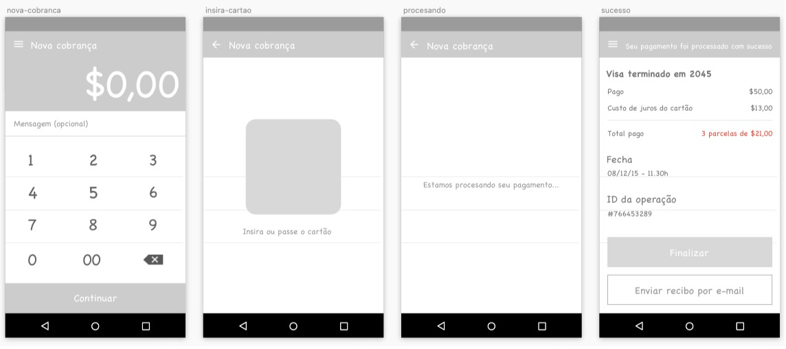
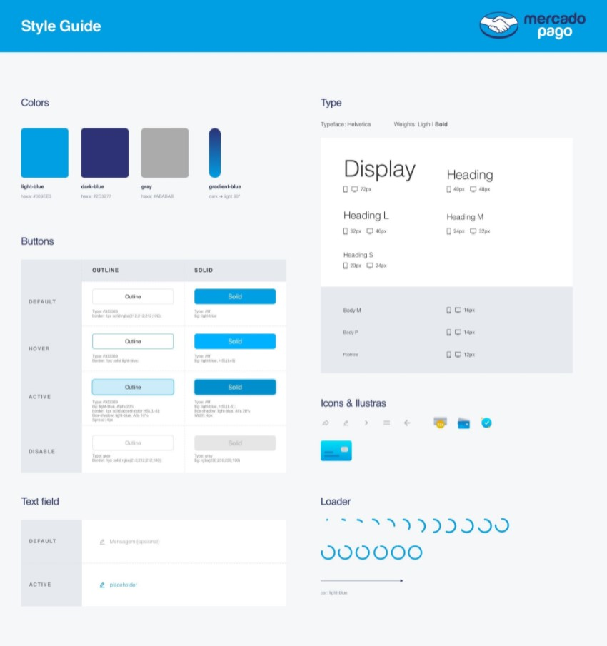
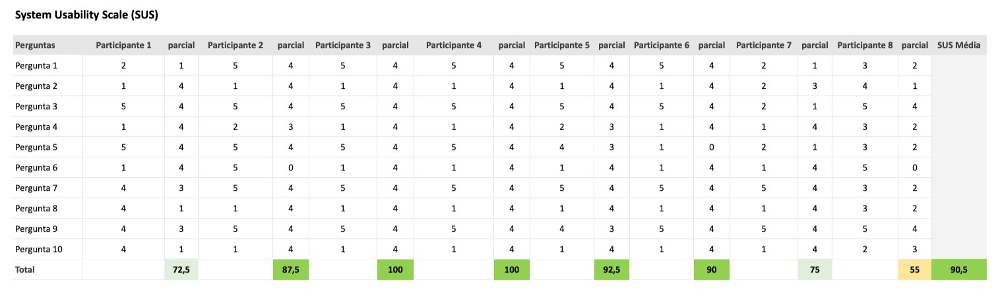

Mercado Livre - Estudo de caso
Objetivo
Criar um fluxo de pagamento padrão no aplicativo para Android, a partir da base definida nas wireframes funcionais. Propondo uma solução mais acessível e funcional, juntamente com a criação de uma LP de lançamento e venda do produto Mercado Pago.
Planejamento
- 1. Entendimento do problema
- Análise do cenário atual.
- 2. Pesquisa
- Identificação de gaps e potencialidades.
- 3. Ideação
- Análise de concorrentes, levantamento de hipóteses.
- 4. Prototipação
- Tangibilização e validação da ideia.
Entendimento do problema
No Mercado Livre, estamos trabalhando no produto Mercado Pago POS (Point of sale), um aplicativo (Android e iOS) que permite cobrar com um cartão de crédito através do Mercado Pago de qualquer lugar. Esse aplicativo funciona com uma maquininha de cartão de crédito que se conecta ao dispositivo via Bluetooth.
Características e benefícios do produto:
- Com a maquininha do Mercado Pago e um celular, você poderá oferecer pagamentos parcelados sem juros com todos os cartões de crédito.
- Você também pode cobrar pelas vendas do Mercado Livre, na hora em que as entregar, grátis, sem comissão adicional por usar o Mercado Pago.
- Você pode gerenciar suas cobranças, ver o histórico com os detalhes de cada cobrança e até mesmo devolver o pagamento para o comprador, caso precise cancelar a venda.
- Depois de cobrar, você pode enviar um comprovante de pagamento por e-mail aos seus compradores.
- É muito seguro: você evita andar com dinheiro vivo enquanto nós atendemos aos mais altos padrões de segurança na web.
🕵️♂️ Pesquisa
Inicialmente realizei uma análise comparativa dos concorrentes do mesmo segmento que temos no mercado e que foram citados no desafio.
Benchmarking
- Square
- Pagseguro
- iZettle
- Sumup
- Paypal
Busquei levantar referências tanto da área logada quanto da área deslogada, afim de me nutrir de insumos para seguir com a pesquisa.
 

Ver detalhamento no Miro: Link dos boards
Observações encontradas na análise comparativa
- A maioria dos layouts são cleans e minimalistas, apresentando as informações de maneira clara e com mais respiro entre os conteúdos textuais;
- Cantos arredondados estão presentes na maioria dos cards, causando conforto e fácil assimilação do conteúdo apresentado;
- Cantos arredondados estão presentes na maioria dos cards, causando conforto e fácil assimilação do conteúdo apresentado;
- Nas LPs deslogadas os cards em Swipe são utilizados para "funcionalidades" e "como funciona", dessa forma sintetizam mais as informações diminuindo a extensão da página mobile;
- Cores, Tipos, Ilustrações e Ícones são usados com o mesmo padrão tanto na área logada quanto na área deslogada, criando consistência visual e fácil assimilação de Branding;
- Falando em tom de voz tanto na área logada quanto deslogada a abordagem é simples e acessível.
Em sequência criei uma Matriz de certezas, suposições e dúvidas, onde inicialmente fiz um recorte do tema em questão e busquei organizar quais informações eu já tinha e quais eu precisaria buscar respostas.
Matriz CSD
Recorte: Necessidades e desafios de pessoas que utilizam maquininhas de cartão para pagamento.
Fonte: Economia Uol | Revista Pegn
Certezas
- App precisa ser vinculado a maquininha física;
- Máquina de cartão já é realidade em 46% dos pequenos negócios;
- Compras com cartões de crédito e débito subiram 18,7% em 2019.
Suposições
- Usuário envia comprovante por e-mail e SMS;
- Usuário utiliza o campo de mensagem para identificar a cobrança.
Dúvidas
- Quem é a pessoa usuária desse serviço?
- Quais as suas necessidades?
- Quais as dificuldades encontradas na hora de realizar uma cobrança?
Visando entender mais os usuários, estruturei um questionário online para investigrar sobre suas principais motivações e hesitações em utilizar o serviço.
Roteiro de perguntas - Questionário online
- Você faz uso de alguma plataforma para pagamentos digitais? Qual? [multipla]
- Como você ficou sabendo sobre esse serviço? [multipla]
- Como você atua? [fechada]
- Você comercializa produtos ou presta serviços? [fechada]
- Você faz uso de máquina para cartão? Qual? [multipla]
- Tem quanto tempo que você utiliza esse serviço? [fechada]
- Com qual frequência você utiliza? [fechada]
- Qual o tipo de operação que você utiliza para cobrança de pagamentos? [multipla]
- Qual foi a motivação por ter escolhido essa máquina dentre os concorrentes? [aberta]
- Você enfrenta alguma dificuldade hoje com o uso desse serviço? Qual? [aberta]
- Qual a sua ocupação ou ramo de atividade do seu negócio? [aberta]
- Qual a sua faixa etária? [fechada]
- Qual região você reside? [fechada]
Compilado dos resultados
Participantes: 6 pessoasGoogle Forms: Link do questionário
Ver detalhamento no Miro: Link do Board
Observações encontradas nas respostas do questionário
- Dos participantes da pesquisa 66,7% utilizam o Mercado Pago como plataforma de pagamento digital;
- 50% dos participantes souberam do produto por indicação de amigos e 33,3% pelo site da empresa;
- 83,3% atua como Pessoa Física;
- 66,7% comercializa produtos ou presta serviços;
- 1 a 3 anos é o tempo que a maioria utiliza o serviço;
- De 2 a 3 vezes por semana é a frequência de utilização do produto;
- 33,3% dos que utilizam o serviço preferem crédito à vista;
- Juros mais baixos e facilidade no uso foram citados como motivações de escolha da máquina dentre os concorrentes;
- Falta de suporte humano foi citado como uma das dificuldades enfrentadas pelos usuários com o serviço;
- A maioria possui o próprio negócio;
- 66,7% dos entrevistados estão na faixa etária de 20 a 29 anos, residentes da região Nordeste;
- Dos que não possuem a maquininha citaram não terem necessidade já que a maioria dos pagamentos são realizados por transferência ou Boleto bancário como justificativa do mesmo.
Após questionário convidei algumas pessoas para participarem de um teste de usabilidade e avaliarem o fluxo do wireframe em baixa que recebi do desafio.
Validação wireframe baixa fidelidade
O teste foi estruturado na ferramenta Maze onde o usuário era apresentado a um cenário e recebia uma tarefa.
Roteiro do teste
Cenário: Você acabou de efetuar uma venda e precisa registrar o pagamento da sua cliente.
Ela quer passar o cartão de crédito e parcelar 50 reais em 3x.
Tarefa: Como vc faria para registrar o pagamento?
Após finalizar a tarefa do teste fiz as seguintes perguntas:
- Você esperava algo diferente do que você fez?
- Existiu alguma dificuldade em concluir a tarefa?
- Você sentiu falta de alguma informação?
App Maze: Link do teste
Observações encontradas nas respostas do teste
- Foram citados pelos usuários a necessidade de ter opções de parcelamento ou à vista;
- Outra necessidade apontada pelos participantes foi a de ter a possibilidade de compartilhar o comprovante da transação por algum aplicativo além do e-mail.
🔍 Ideação
Em sequência criei a partir de padrões comportamentais e necessidades observadas na coleta de dados um personagem fictício.
Com o auxílio da protopersona pude criar uma jornada feliz para o fluxo de pagamento.
🎨 Prototipação
Criei um Style Guide para me nortear na criação do layout, com especificações de Cores, Botões, Tipografia, Ícones e alguns comportamentos e microinterações.
Componentes & Style Guide
Protótipo navegável
Realizei a criação do fluxo de navegação e protótipo navegável em alta fidelidade.
📋 Validação
Pensando em validar o protítipo criado, realizei um teste de usabilidade com alguns participantes e em sequência apliquei o método SUS para avaliar a efetividade, eficiência e satisfação dos usuários.
Fluxo de navegação
Cálculo do SUS: Link xls
Média = 90,5% considerado um resultado excelente.